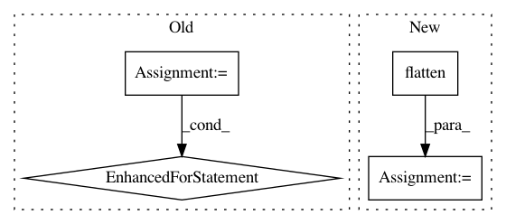

8b0d454102218af317adfeeda8aefc576769e172,ludwig/models/modules/image_encoders.py,ResNetEncoder,call,#ResNetEncoder#Any#Any#Any#,203
Before Change
def call(self, inputs, training=None, mask=None):
hidden = tf.cast(inputs, tf.float32)
for layer in self.layers:
hidden = layer(hidden, training=training)
return {"encoder_output": hidden}
After Change
hidden = tf.cast(inputs, tf.float32)
hidden = self.resnet(hidden, training=training)
hidden = self.flatten(hidden, training=training)
hidden = self.fc_stack(hidden, training=training)
return {"encoder_output": hidden}
In pattern: SUPERPATTERN
Frequency: 3
Non-data size: 4
Instances
Project Name: uber/ludwig
Commit Name: 8b0d454102218af317adfeeda8aefc576769e172
Time: 2020-07-21
Author: w4nderlust@gmail.com
File Name: ludwig/models/modules/image_encoders.py
Class Name: ResNetEncoder
Method Name: call
Project Name: asyml/texar
Commit Name: 47c71c0524c7804863f2f4bcffdef5a873d84a55
Time: 2017-10-16
Author: junxianh2@gmail.com
File Name: txtgen/modules/connectors/connectors.py
Class Name:
Method Name: _mlp_transform
Project Name: ray-project/ray
Commit Name: 1775e89f262111791fabfd40f80a24f74738fe54
Time: 2020-04-28
Author: sven@anyscale.io
File Name: rllib/models/tf/tf_action_dist.py
Class Name: MultiActionDistribution
Method Name: logp